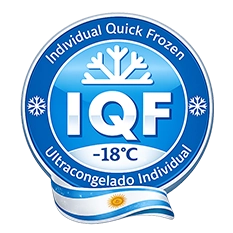

Capacitaciones claras, dinámicas y aplicables para equipos de trabajo. Mejoramos prácticas reales para que tu empresa trabaje con más control, orden y seguridad.
Asesoría Bromatológica Rosario
Transformamos tu negocio de alimentos en un proyecto Seguro Habilitado Rentable
Te acompañamos con asesoría técnica real para que produzcas con confianza, cumplas normativas sin dolores de cabeza y logres una calidad consistente que te permita vender más y crecer.
Trabajo con industrias, PyMEs y comercios en todos los rubros: cárnicos, embutidos, panificados, lácteos, bebidas, conservas, congelados, rotiserías y gastronomía.
Tu asesor técnico
Lic. en Tecnología de los Alimentos
Químico
Magíster en Alimentos
Enfoque práctico y orientado a resultados: mejoramos procesos, ordenamos la producción, reducimos riesgos y dejamos todo listo para inspecciones, habilitaciones y comercialización.
Evaluamos tu empresa con criterio técnico y práctico: higiene, procesos, trazabilidad, registros y riesgos. Te llevás un plan de mejoras claro para elevar la calidad y cumplir normativas.
Gestionamos toda la documentación para que tu negocio esté habilitado y listo para vender. Manuales, registros y acompañamiento completo para tramitar RNE y RNPA.
Implementación de sistemas para ordenar tu producción y trabajar con estándares. Ideal si querés crecer, mejorar controles y estar preparado para auditorías externas.
Si querés ingresar al mercado apto celíacos, te acompaño con un proceso serio: prevención de contaminación cruzada, control de materias primas y documentación técnica.

Asesoramiento técnico en procesos de congelado para mejorar rendimiento y calidad final. Control térmico, estabilidad del producto y estandarización lote a lote.
